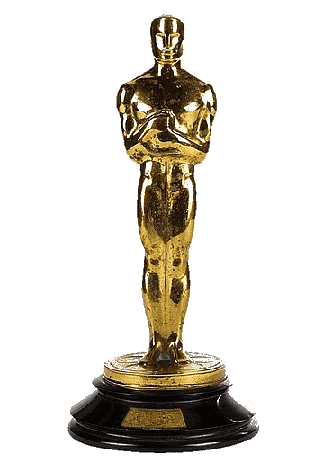

Oscary - ogólne informacje
Witamy na stronie poświęconej Oscarom, corocznej ceremonii, która nagradza najlepsze osiągnięcia w przemyśle filmowym.
Historia Oscarów
 Nagroda Akademii Filmowej, znana jako Oscar, to prestiżowe wyróżnienie przyznawane corocznie przez Amerykańską Akademię Sztuki i Wiedzy Filmowej. Pierwsza ceremonia odbyła się 16 maja 1929 roku. Nagrody przyznawane są filmom, które były wyświetlane w amerykańskich kinach w poprzednim roku kalendarzowym. Uroczystość wręczenia Oscarów odbywa się zazwyczaj wczesną wiosną, a większość wyróżnień trafia do filmów anglojęzycznych. Od 2002 roku ceremonia odbywa się w Dolby Theatre w Hollywood. Oscary są uważane za jedną z najważniejszych nagród filmowych, mimo że koncentrują się głównie na amerykańskiej kinematografii. Wraz z nagrodami Emmy, Grammy i Tony tworzą tzw. EGOT – zestaw czterech najważniejszych wyróżnień w amerykańskim przemyśle rozrywkowym.
Najważniejsze kategorie
Wśród wielu kategorii, które są nagradzane podczas ceremonii, najbardziej znane to:
- Najlepszy Film: Nagroda ta jest przyznawana filmowi, który zdobył najwyższe uznanie w danym roku.
- Najlepszy Reżyser: Ta nagroda trafia do reżysera filmu, który wyróżnił się wyjątkowym warsztatem artystycznym.
- Najlepszy Aktor/Actorka: Nagrody te są przyznawane najlepszym aktorom, którzy wykazali się wyjątkowym talentem w danym roku.
- Najlepszy Scenariusz: Ta kategoria honoruje najlepsze scenariusze filmowe, zarówno oryginalne, jak i adaptowane.
Znane Filmy i Aktorzy
W historii Oscarów nie brakowało filmów i aktorów, którzy zostali na zawsze zapamiętani dzięki swoim osiągnięciom. Filmy takie jak "Przeminęło z wiatrem", "Casablanca", czy "Titanic" zdobyły serca widzów na całym świecie i zyskały uznanie krytyków. Aktorzy tacy jak Meryl Streep, Jack Nicholson czy Denzel Washington zyskali status legend dzięki wielokrotnym nominacjom i wygranym w swojej karierze.
Gdzie i kiedy odbywa się ceremonia?
Ceremonia wręczenia Oscarów odbywa się corocznie w Los Angeles, zazwyczaj w lutym lub marcu. Miejsce, w którym odbywa się gala, zmienia się, ale od wielu lat jest to Dolby Theatre w Hollywood. Ceremonia przyciąga miliony widzów na całym świecie, a także wiele znanych osobistości z branży filmowej.
Podsumowanie
Oscary to nie tylko nagrody, ale także wydarzenie, które łączy ludzi z całego świata w miłości do kina. Każdego roku świętujemy osiągnięcia artystyczne, które inspirują nas i dostarczają niezapomnianych chwil. Niezależnie od tego, kto zdobywa nagrody, Oscary pozostają symbolem doskonałości w przemyśle filmowym.